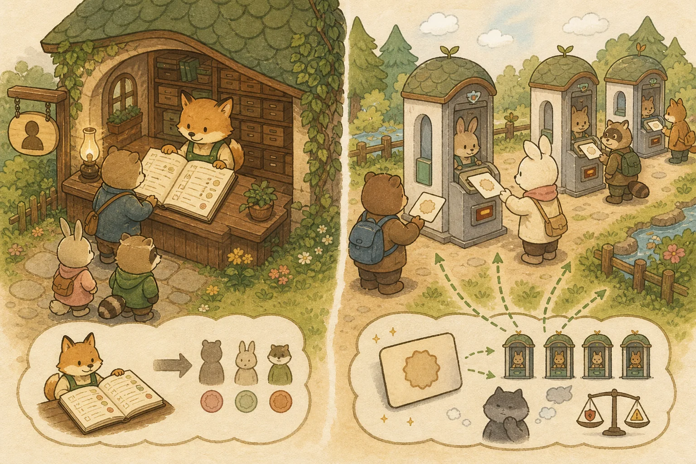

Chapter 04: RESTful API 설계 & Security 6 & Redis JWT
REST API 설계·상태코드, SLF4J 로깅, Bean Validation + ProblemDetail 예외 처리, 그리고 인증·보안의 토대(Stateless·쿠키 vs 세션·해싱 vs 암호화·서블릿 필터·HTTPS) 위에서 JWT 구조·이중 토큰·Spring Security 6·JwtAuthFilter·BCrypt·Redis 블랙리스트·CORS·Axios 토큰 관리까지 — REST·검증·예외·로깅·인증·보안 전 영역을 토대부터 13개 섹션으로 완전 정복합니다.
🌐 A. RESTful API 설계 + 검증 · 예외 · 로깅
1. RESTful API 설계 원칙 — HTTP 메서드 & 상태코드
REST는 URI로 리소스(명사)를 표현하고, HTTP 메서드로 행위(동사)를 표현합니다.
💡 비유로 이해하기: 은행 창구 표준 거래
레거시 API는 "돈인출해줘.do"처럼 동사 기반의 임의 창구를 찾아 헤매는 혼란이었습니다. REST는 "계좌(명사, URI)"라는 리소스에 "출금(POST)", "조회(GET)" 등 표준 행위(HTTP Method)를 적어 내미는 은행 공통 표준 거래서입니다.
주요 HTTP 상태코드:
요청 성공
리소스 생성 성공
잘못된 요청 (유효성 실패)
인증 실패 (토큰 없음/만료)
인가 실패 (권한 없음)
리소스 없음
서버 내부 오류
2. 프로덕션 코드의 첫 줄은 로그 — SLF4J + Logback
System.out.println()은 학습용입니다. 실무에선 출력 위치 제어, 로그 레벨 필터링, 비동기 IO, 요청별 컨텍스트 추적이 모두 필요하므로 SLF4J(Facade) + Logback(구현체)가 사실상 표준입니다.
💡 비유로 이해하기: 항공기 블랙박스
사고가 났을 때 "엔진이 어떻게 멈췄나"를 추적할 수 있는 유일한 근거는 비행 중 자동 기록된 블랙박스입니다. System.out.println은 사후에 직원이 종이에 적어둔 메모와 같아 — 일관성도 없고 보존도 안 됩니다.
로그 레벨 5단계:
가장 세밀, 거의 안 씀
개발 중 추적용
정상 동작 기록 (디폴트)
잠재적 문제
처리 실패, 추적 필수
@RestController
@RequiredArgsConstructor
@Slf4j // Lombok이 private static final Logger log = LoggerFactory.getLogger(...) 자동 생성
public class OrderController {
@PostMapping("/api/orders")
public ResponseEntity<OrderResponse> create(@Valid @RequestBody OrderRequest req) {
// INFO: 정상 흐름 추적 (운영에서도 남김)
log.info("주문 생성 요청 수신 userId={} itemCount={}", req.userId(), req.items().size());
// DEBUG: 개발 추적 (운영 환경에서는 비활성화)
log.debug("주문 상세 payload={}", req);
try {
var order = orderService.create(req);
log.info("주문 생성 성공 orderId={}", order.getId());
return ResponseEntity.status(201).body(OrderResponse.from(order));
} catch (OutOfStockException e) {
// WARN: 비즈니스적 실패 (예상된 흐름)
log.warn("재고 부족으로 주문 실패 userId={} productId={}", req.userId(), e.productId());
throw e; // 처리는 @ControllerAdvice에 위임
}
}
}구조화 로깅 (Structured Logging): 실무에선 단순 텍스트가 아니라 JSON으로 로그를 남깁니다. Datadog/Loki/Elastic 같은 로그 수집기가 필드별로 인덱싱하여 "userId=42의 ERROR만"처럼 검색 가능해집니다.
<configuration>
<appender name="JSON" class="ch.qos.logback.core.ConsoleAppender">
<encoder class="net.logstash.logback.encoder.LogstashEncoder"/>
</appender>
<root level="INFO">
<appender-ref ref="JSON"/>
</root>
</configuration>MDC(Mapped Diagnostic Context): 요청 ID / 사용자 ID 같은 식별자를 한 번만 세팅하면 그 요청에서 발생하는 모든 로그에 자동으로 따라붙습니다. 필터에서 MDC.put("requestId", uuid) 한 줄이면 분산 추적의 기초가 완성됩니다.
3. Bean Validation — 입력은 컨트롤러 진입 시점에 검증
잘못된 요청이 서비스 레이어 깊숙이 들어가서 터지면 디버깅 비용이 폭증합니다. 컨트롤러 진입 직후 DTO 단계에서 검증을 끝내는 것이 표준 패턴입니다.
💡 비유로 이해하기: 공항 보안 검색대
비행기 안에서 위험 물품이 발견되면 회항해야 합니다. 공항 입구의 보안 검색대(@Valid)에서 모두 거르는 것이 비용이 가장 낮습니다. DTO의 어노테이션들이 그 X-Ray 스캐너 역할을 합니다.
// Spring Boot 3.x: jakarta.validation 사용 (Spring Boot 2의 javax.validation에서 변경)
import jakarta.validation.constraints.*;
import jakarta.validation.Valid;
import java.util.List;
public record OrderRequest(
@NotNull(message = "사용자 ID는 필수입니다")
Long userId,
@NotEmpty(message = "주문 항목은 최소 1개 이상")
@Valid // 내부 객체도 재귀 검증
List<OrderItemRequest> items,
@NotBlank(message = "배송지를 입력하세요")
@Size(max = 200, message = "배송지는 200자 이내")
String shippingAddress,
@Pattern(regexp = "^010-\\d{4}-\\d{4}$", message = "전화번호 형식: 010-1234-5678")
String phone
) {}
public record OrderItemRequest(
@NotNull Long productId,
@Min(value = 1, message = "수량은 1 이상")
@Max(value = 99, message = "수량은 최대 99")
Integer quantity
) {}@PostMapping("/api/orders")
public ResponseEntity<OrderResponse> create(
@Valid @RequestBody OrderRequest req // ← 진입 즉시 검증
) {
// 여기 도달하면 req는 이미 모든 제약 통과 상태. 서비스 코드는 더 깔끔해짐.
return ResponseEntity.status(201).body(orderService.create(req));
}검증이 실패하면 Spring이 자동으로 MethodArgumentNotValidException을 던집니다. 이 예외는 다음 섹션의 글로벌 예외 처리에서 일관된 형식으로 변환됩니다.
핵심 어노테이션 정리:
| 어노테이션 | 용도 |
|---|---|
@NotNull | null 금지 (빈 문자열은 통과) |
@NotBlank | null + 빈 문자열 + 공백 금지 (String 전용) |
@NotEmpty | null + 빈 컬렉션/배열/문자열 금지 |
@Size(min, max) | 문자열/컬렉션 크기 제한 |
@Min / @Max | 숫자 범위 |
@Email | 이메일 형식 |
@Pattern | 정규식 (전화번호, 우편번호 등) |
@Valid | 중첩 DTO 재귀 검증 (List 내부 객체 검증 필수) |
4. 글로벌 예외 처리 + ProblemDetail (RFC 9457)
각 컨트롤러마다 try-catch를 도배하면 코드가 진흙탕이 됩니다. @RestControllerAdvice로 예외 처리를 한 곳에 모으고, 응답 형식은 ProblemDetail(RFC 9457, Spring 6.0+ 내장)로 표준화합니다.
💡 비유로 이해하기: 빌딩 통합 안전 관제실
각 사무실마다 자기 방식대로 화재 경보를 처리하면 카오스입니다. 빌딩 전체에 통합 관제실(@RestControllerAdvice)이 있으면 어떤 사무실에서 신호가 와도 표준 양식(ProblemDetail)으로 일사불란하게 대응합니다.
import org.springframework.http.ProblemDetail;
import org.springframework.http.HttpStatus;
import org.springframework.web.bind.annotation.*;
import org.springframework.web.bind.MethodArgumentNotValidException;
@RestControllerAdvice // 전역 컨트롤러 후처리 인터셉터
@Slf4j
public class GlobalExceptionHandler {
// 1. Bean Validation 실패 → 400 + 필드별 에러 메시지
@ExceptionHandler(MethodArgumentNotValidException.class)
public ProblemDetail handleValidation(MethodArgumentNotValidException ex) {
var problem = ProblemDetail.forStatus(HttpStatus.BAD_REQUEST);
problem.setTitle("입력 검증 실패");
problem.setType(URI.create("https://shop.example.com/errors/validation"));
Map<String, String> fieldErrors = ex.getBindingResult().getFieldErrors().stream()
.collect(Collectors.toMap(
FieldError::getField,
fe -> fe.getDefaultMessage() != null ? fe.getDefaultMessage() : "invalid"
));
problem.setProperty("errors", fieldErrors);
log.warn("검증 실패 fields={}", fieldErrors.keySet());
return problem;
}
// 2. 도메인 예외 (상품 없음 등) → 404
@ExceptionHandler(EntityNotFoundException.class)
public ProblemDetail handleNotFound(EntityNotFoundException ex) {
var problem = ProblemDetail.forStatus(HttpStatus.NOT_FOUND);
problem.setTitle("리소스를 찾을 수 없음");
problem.setDetail(ex.getMessage());
return problem;
}
// 3. 비즈니스 규칙 위반 → 409
@ExceptionHandler(OutOfStockException.class)
public ProblemDetail handleOutOfStock(OutOfStockException ex) {
var problem = ProblemDetail.forStatus(HttpStatus.CONFLICT);
problem.setTitle("재고 부족");
problem.setDetail("상품 ID " + ex.productId() + " 재고가 부족합니다");
problem.setProperty("productId", ex.productId());
return problem;
}
// 4. 처리되지 않은 모든 예외 → 500 + 풀 스택 ERROR 로그
@ExceptionHandler(Exception.class)
public ProblemDetail handleUnknown(Exception ex) {
log.error("처리되지 않은 예외 발생", ex); // 스택 트레이스 포함 ERROR 로그
var problem = ProblemDetail.forStatus(HttpStatus.INTERNAL_SERVER_ERROR);
problem.setTitle("서버 오류");
problem.setDetail("일시적 오류입니다. 잠시 후 다시 시도해주세요.");
return problem;
}
}// 검증 실패 시 응답 본문 (Content-Type: application/problem+json)
{
"type": "https://shop.example.com/errors/validation",
"title": "입력 검증 실패",
"status": 400,
"detail": null,
"instance": "/api/orders",
"errors": {
"shippingAddress": "배송지를 입력하세요",
"items[0].quantity": "수량은 1 이상"
}
}ProblemDetail vs 옛 방식의 차이:
❌ 옛날 자체 ErrorResponse
팀마다 자체 DTO. 회사마다 모양 다름. 프론트가 매번 새로 학습.
✅ ProblemDetail (RFC 9457)
표준 스펙. 프론트엔드 라이브러리 호환. type/title/status/detail/instance 필드 일관성.
⛓️ 더 깊은 활용은 부록 B — Q27 @Transactional 추가 함정 (Propagation·Rollback Rules·readOnly)과 Q25 OWASP Top 10에서 복습.
🛠️ [실무 보강 박스] Springdoc OpenAPI — 코드가 곧 API 문서
문서가 코드와 따로 노는 순간 곧 거짓말이 됩니다. Springdoc OpenAPI는 컨트롤러 어노테이션을 분석해 Swagger UI를 자동 생성합니다.
// build.gradle
implementation 'org.springdoc:springdoc-openapi-starter-webmvc-ui:2.5.0'
// application.yml
springdoc:
swagger-ui:
path: /swagger-ui.html # http://localhost:8080/swagger-ui.html
api-docs:
path: /v3/api-docs # OpenAPI 3 JSON 스펙
// 컨트롤러에 메타데이터 부여 (선택, 없어도 작동)
@Tag(name = "주문", description = "쇼핑몰 주문 API")
@RestController
public class OrderController {
@Operation(summary = "주문 생성", description = "장바구니 항목으로 주문 생성")
@ApiResponse(responseCode = "201", description = "생성 성공")
@ApiResponse(responseCode = "400", description = "입력 검증 실패")
@PostMapping("/api/orders")
public ResponseEntity<OrderResponse> create(@Valid @RequestBody OrderRequest req) {
// ...
}
}장점: 코드 = 문서 (괴리 없음) · 프론트엔드 팀이 실시간 API 명세 확인 · Postman/Insomnia로 즉시 호출 가능 · openapi-generator로 클라이언트 SDK 자동 생성까지 연결.
🔐 B. 인증·보안의 토대 + JWT
5. 인증·보안의 토대 — 쿠키·세션·해싱·필터·HTTPS
JWT·BCrypt·SecurityFilterChain을 제대로 이해하려면 먼저 그 토대가 되는 웹 인증/보안 기초가 필요합니다. 복귀 개발자가 면접에서 "세션과 JWT 차이"를 물으면 막히는 이유가 이 토대를 건너뛰었기 때문입니다.
① Stateful vs Stateless
💡 비유로 이해하기: 단골 가게 vs 무인 편의점
Stateful(상태 유지)은 단골 가게 — 주인이 "당신 누구인지" 기억(서버 메모리에 세션 저장). 손님 많아지면 주인 머리 터짐(서버 확장 어려움).
Stateless(무상태)는 무인 편의점 — 매번 회원카드(토큰)를 보여주면 됨. 서버가 아무것도 기억 안 하므로 서버를 여러 대로 늘려도 문제없음(수평 확장 용이). JWT가 이 방식입니다.

② 쿠키 vs 세션 (JWT 이전의 전통 인증)
| 구분 | 쿠키 (Cookie) | 세션 (Session) |
|---|---|---|
| 저장 위치 | 브라우저(클라이언트) | 서버 메모리/저장소 |
| 보안 | 탈취 위험(클라에 노출) | 상대적 안전(ID만 쿠키에) |
| 동작 | 서버가 Set-Cookie로 발급 → 브라우저가 매 요청에 자동 첨부 | 서버가 sessionId를 쿠키로 주고, 실제 데이터는 서버에 보관 |
| 확장성 | - | 서버 늘리면 세션 공유 문제(→ Redis 세션 저장소 필요) |
세션의 확장성 문제를 무상태로 푼 것이 JWT입니다. 다음 섹션에서 JWT를 배울 때 "왜 세션 대신 JWT인가"의 답이 바로 이 확장성입니다.
③ 해싱 vs 암호화 vs 인코딩 (BCrypt 이전 필수 구분)
🔒 해싱 (단방향)
원본 → 해시. 되돌릴 수 없음. 비밀번호 저장에 사용(BCrypt). 같은 입력은 같은 해시.
🔑 암호화 (양방향)
키로 암호화 ↔ 복호화. 되돌릴 수 있음. 카드번호 등 다시 읽어야 하는 데이터에 사용(AES).
📝 인코딩 (변환)
보안 아님! 단순 형식 변환(Base64). 누구나 디코딩 가능. JWT의 Header/Payload가 인코딩일 뿐.
면접 단골: "JWT는 암호화되나요?" → "아니요, Payload는 Base64 인코딩일 뿐 누구나 디코딩 가능. 위변조만 Signature로 막습니다." 이 구분을 못하면 보안 사고가 납니다.
④ 서블릿 필터 / 미들웨어 (JwtAuthFilter 이전)
// 필터: 요청이 Controller에 도달하기 "전"에 가로채는 관문 (체인 구조)
// [요청] → Filter1 → Filter2 → ... → DispatcherServlet → Controller
@Component
public class LoggingFilter extends OncePerRequestFilter { // 요청당 1회 보장
@Override
protected void doFilterInternal(HttpServletRequest req,
HttpServletResponse res,
FilterChain chain) throws ... {
// 요청 전처리 (예: 토큰 검사)
log.info("요청 진입: {}", req.getRequestURI());
chain.doFilter(req, res); // ← 다음 필터/컨트롤러로 전달 (필수!)
// 응답 후처리
}
}
// 🎯 JWT 인증도 이 필터 메커니즘으로 구현됩니다 (다음 섹션 JwtAuthenticationFilter).
// 프론트엔드의 Axios Interceptor(Ch 7)와 개념적으로 같은 '가로채기' 패턴.⑤ HTTPS / TLS 기초
JWT를 아무리 잘 설계해도 평문 HTTP로 전송하면 토큰이 중간에 탈취됩니다(중간자 공격). HTTPS는 TLS로 통신을 암호화해 이를 막습니다. JWT/세션 쿠키는 반드시 HTTPS 위에서 전송해야 하며, 쿠키엔 Secure(HTTPS만)·HttpOnly(JS 접근 차단)·SameSite(CSRF 방어) 속성을 답니다.
⛓️ 쿠키/세션 → 다음 JWT 토큰 구조, 해싱 → BCrypt 섹션, 필터 → JwtAuthenticationFilter, 보안 전반은 부록 B Q25 OWASP.
6. JWT 토큰 구조 — Header.Payload.Signature
JWT(JSON Web Token)는 세 파트를 .으로 연결한 문자열입니다. 서버가 세션을 저장하지 않는 무상태(Stateless) 인증의 핵심입니다.
💡 비유로 이해하기: 놀이공원 손목 밴드
세션(Session)은 놀이공원 입구에서 신분증을 맡기는 것 — 매번 직원이 보관함에서 찾아야 합니다. JWT는 입장 시 받는 손목 밴드입니다. 밴드에 "이름, 등급, 유효시간"이 적혀 있어 놀이기구마다 밴드만 보여주면 됩니다. 위조 방지를 위해 특수 잉크(서명)로 인쇄되어 있습니다.
// JWT = Header.Payload.Signature (Base64 인코딩)
// 1. Header — 토큰 타입과 서명 알고리즘
{"alg": "HS256", "typ": "JWT"}
// 2. Payload — 사용자 정보 (Claims)
{
"sub": "user@shop.com", // Subject (사용자 식별자)
"role": "ROLE_USER", // 권한
"iat": 1700000000, // Issued At (발급 시간)
"exp": 1700003600 // Expiration (만료 시간 — 1시간 후)
}
// 3. Signature — 위변조 방지 서명
// HMACSHA256(base64(header) + "." + base64(payload), 비밀키)
// → 서버만 알고 있는 비밀키로 서명. 토큰 내용이 1비트라도 바뀌면 검증 실패!⚠️ JWT의 한계: 한번 발급되면 서버가 직접 만료시킬 수 없습니다 (Stateless). 로그아웃 처리를 위해 Redis 블랙리스트가 필요합니다.
🔐 JWT 인증 + Redis 블랙리스트 전체 흐름: 로그인부터 자원 접근, 로그아웃까지의 시퀀스를 시각화한 다이어그램입니다.
sequenceDiagram
autonumber
participant U as 👤 사용자
participant F as 🖥️ Next.js
Client
participant A as 🍃 Spring
Auth Server
participant R as 🔴 Redis
(Blacklist)
participant S as 🍃 Spring
Resource Server
rect rgb(40,55,80)
Note over U,A: 로그인 흐름
U->>F: 이메일/비밀번호 입력
F->>A: POST /auth/login
A->>A: BCrypt 검증
A-->>F: Access Token (15분)
+ Refresh Token (7일)
F->>F: localStorage 저장
end
rect rgb(40,80,55)
Note over F,S: 일반 요청 흐름
F->>S: GET /api/orders
Authorization: Bearer {token}
S->>R: 블랙리스트 확인?
R-->>S: not blacklisted
S->>S: JWT 서명·만료 검증
S-->>F: 200 OK + 주문 목록
end
rect rgb(80,55,40)
Note over U,R: 로그아웃 흐름
U->>F: 로그아웃 클릭
F->>A: POST /auth/logout
A->>R: SETEX blacklist:{token}
{남은 유효시간}
A-->>F: 204 No Content
F->>F: localStorage 토큰 제거
end
7. Access Token + Refresh Token 이중 토큰 전략
Access Token만 사용하면 만료 시간을 길게 잡으면 보안 취약, 짧게 잡으면 사용자가 계속 재로그인해야 합니다. 이중 토큰으로 해결합니다.
① 로그인 → Access + Refresh 발급 →
② API 요청 Access Token 사용 →
③ 만료 401 응답 →
④ 재발급 Refresh Token으로 새 Access 발급 →
⑤ 재시도
🛡️ C. Spring Security 6 구현
8. SecurityFilterChain — Lambda 기반 보안 설정
Spring Security 6.x의 최신 권장(사실상 표준) 방식은 Lambda DSL 기반 SecurityFilterChain 빈 설정입니다. 구 and() 체이닝 스타일은 deprecated되어 향후 버전에서 제거 예정이므로, 신규 코드는 Lambda DSL로 작성합니다.
@Configuration
@EnableWebSecurity
@RequiredArgsConstructor
public class SecurityConfig {
private final JwtAuthenticationFilter jwtAuthFilter;
@Bean
public SecurityFilterChain securityFilterChain(HttpSecurity http) throws Exception {
return http
// 1. JWT 사용 → CSRF 비활성화
.csrf(csrf -> csrf.disable())
// 2. CORS 설정
.cors(cors -> cors.configurationSource(corsConfigSource()))
// 3. 세션 무상태 정책
.sessionManagement(session ->
session.sessionCreationPolicy(SessionCreationPolicy.STATELESS))
// 4. 경로별 인가 설정
.authorizeHttpRequests(auth -> auth
.requestMatchers("/api/auth/**", "/api/products/**").permitAll()
.requestMatchers("/api/admin/**").hasRole("ADMIN")
.anyRequest().authenticated()
)
// 5. JWT 필터를 UsernamePasswordAuthFilter 앞에 삽입
.addFilterBefore(jwtAuthFilter,
UsernamePasswordAuthenticationFilter.class)
.build();
}
@Bean
public PasswordEncoder passwordEncoder() {
return new BCryptPasswordEncoder(); // 비밀번호 단방향 암호화
}
}9. JwtAuthenticationFilter — 토큰 검증 필터 구현
모든 HTTP 요청을 가로채어 JWT 토큰을 추출 → 블랙리스트 확인 → 서명 검증 → SecurityContext에 인증 정보 적재하는 필터입니다.
@Component
@RequiredArgsConstructor
public class JwtAuthenticationFilter extends OncePerRequestFilter {
private final JwtTokenProvider jwtTokenProvider;
private final RedisBlacklistService blacklistService;
@Override
protected void doFilterInternal(HttpServletRequest request,
HttpServletResponse response, FilterChain chain) throws Exception {
// 1. 헤더에서 토큰 추출
String token = resolveToken(request);
if (token != null) {
// 2. Redis 블랙리스트 확인
if (blacklistService.isBlacklisted(token)) {
response.sendError(401, "로그아웃된 토큰입니다");
return;
}
// 3. 토큰 유효성 검증 (서명 + 만료시간)
if (jwtTokenProvider.validateToken(token)) {
// 4. 토큰에서 인증 정보 추출 → SecurityContext에 적재
Authentication auth = jwtTokenProvider.getAuthentication(token);
SecurityContextHolder.getContext().setAuthentication(auth);
}
}
chain.doFilter(request, response); // 다음 필터로 진행
}
private String resolveToken(HttpServletRequest request) {
String bearer = request.getHeader("Authorization");
if (bearer != null && bearer.startsWith("Bearer ")) {
return bearer.substring(7); // "Bearer " 제거
}
return null;
}
}10. BCrypt 비밀번호 암호화 — 단방향 해시
비밀번호를 평문(Plain Text)으로 저장하면 DB 유출 시 모든 계정이 위험합니다. BCrypt는 복호화가 불가능한 단방향 해시로, 같은 비밀번호도 매번 다른 해시를 생성합니다(Salt 자동 적용).
@Service
@RequiredArgsConstructor
public class AuthService {
private final PasswordEncoder passwordEncoder; // BCryptPasswordEncoder
// 회원가입 — 비밀번호 암호화 후 저장
public void signup(SignupRequest req) {
String encodedPassword = passwordEncoder.encode(req.password());
// "1234" → "$2a$10$xN4k..." (60자 해시)
memberRepository.save(new Member(req.email(), encodedPassword));
}
// 로그인 — 평문 vs 해시 비교 (복호화 아님!)
public TokenResponse login(LoginRequest req) {
Member member = memberRepository.findByEmail(req.email())
.orElseThrow(() -> new BadCredentialsException("이메일 없음"));
// matches()로 비교 (encode된 값끼리 비교하면 안 됨!)
if (!passwordEncoder.matches(req.password(), member.getPassword())) {
throw new BadCredentialsException("비밀번호 불일치");
}
return jwtTokenProvider.generateTokens(member);
}
}11. Redis 블랙리스트 — 로그아웃 토큰 무효화
JWT는 발급 후 서버가 직접 만료시킬 수 없습니다. 로그아웃 시 토큰의 남은 TTL만큼 Redis에 등록하여 재사용을 차단합니다.
@Service
@RequiredArgsConstructor
public class RedisBlacklistService {
private final StringRedisTemplate redisTemplate;
// 로그아웃 시: 토큰을 블랙리스트에 등록 (남은 만료시간만큼 TTL 설정)
public void blacklistToken(String token, long remainingTimeMs) {
redisTemplate.opsForValue().set(
"blacklist:" + token,
"logout",
remainingTimeMs,
TimeUnit.MILLISECONDS
);
// TTL이 지나면 Redis가 자동 삭제 → 메모리 관리 자동화!
}
// 요청 필터에서: 블랙리스트 확인
public boolean isBlacklisted(String token) {
return Boolean.TRUE.equals(
redisTemplate.hasKey("blacklist:" + token)
);
}
}⛓️ Redis는 토큰 블랙리스트 외에도 일반 데이터 캐시로 더 광범위하게 활용됩니다. @Cacheable / Look-aside / Write-through / Thundering Herd 방지 같은 본격 캐싱 전략은 부록 B — Q26 캐싱 전략에서 다룹니다.
🔑 [실무 보강 박스] OAuth2 / OIDC 소셜 로그인 — 커스텀 JWT와 결합
지금까지는 우리가 직접 발급한 커스텀 JWT만 다뤘습니다. 하지만 실무 대부분은 "카카오·구글로 로그인"을 요구하고, 면접에서도 단골 후속 질문이 나옵니다. 핵심 한 줄: 소셜 인증에는 "신원 확인"까지만 맡기고, 우리 서비스의 토큰·세션은 우리가 다시 발급합니다. 사용자의 비밀번호(자격증명)는 우리가 절대 보지 않습니다.
💡 비유로 이해하기: 신뢰하는 기관의 신분 확인
매장 회원가입 없이 "정부24 인증"으로 신원만 확인받고, 우리 매장 멤버십 카드(자체 JWT)는 우리가 발급하는 것과 같습니다. 신분 확인은 믿을 만한 기관(provider)에 위임하되, 매장 이용 권한은 우리가 관리합니다.
① Authorization Code Flow (+ PKCE) — 가장 안전한 표준 흐름:
왜 굳이 code를 거칠까요? 토큰이 브라우저(URL)에 노출되지 않고 백엔드 간 통신으로만 오가기 때문입니다. PKCE는 이 code를 가로채도 쓸 수 없게 막는 추가 검증(code_verifier/challenge)으로, 비밀을 숨기기 어려운 SPA·모바일에서 특히 중요합니다.
② OAuth2 vs OIDC — 한 끗 차이가 면접 포인트:
- OAuth2 = 인가(Authorization) 프로토콜. "이 앱이 당신의 무엇에 접근해도 되나"(access_token)에 답합니다.
- OIDC(OpenID Connect) = OAuth2 위에 인증(Authentication)을 얹은 것. "당신이 누구인가"를 표준 id_token(JWT)로 줍니다. 소셜 "로그인"엔 OIDC가 정답입니다.
③ Spring Security 결합 — OAuth2UserService 매핑:
// build.gradle
implementation 'org.springframework.boot:spring-boot-starter-oauth2-client'
// application.yml — provider 등록 (구글 예시; 카카오·네이버는 커스텀 provider 추가)
spring:
security:
oauth2:
client:
registration:
google:
client-id: ${GOOGLE_CLIENT_ID}
client-secret: ${GOOGLE_CLIENT_SECRET}
scope: profile, email
// SecurityFilterChain — oauth2Login 활성화
http.oauth2Login(o -> o
.userInfoEndpoint(u -> u.userService(customOAuth2UserService))
.successHandler(oAuth2SuccessHandler) // ← 인증 성공 시 '우리 자체 JWT' 발급
);
// provider 사용자 정보 → 우리 User로 매핑 (신규면 가입)
@Service
public class CustomOAuth2UserService extends DefaultOAuth2UserService {
@Override
public OAuth2User loadUser(OAuth2UserRequest req) {
OAuth2User user = super.loadUser(req); // provider에서 프로필 조회
String email = user.getAttribute("email");
userRepository.findByEmail(email)
.orElseGet(() -> userRepository.save(User.fromOAuth(user))); // 신규 가입
return user;
}
}
// 이후 oAuth2SuccessHandler가 Access/Refresh JWT 발급 → 섹션 9 JwtAuthenticationFilter 흐름과 동일💡 면접 단골 질문
- "Authorization Code Flow를 단계로 설명하라" → 위 5단계. 핵심은 토큰이 백엔드 간에 교환되어 브라우저에 노출되지 않는다는 점.
- "소셜 로그인 후 우리 서비스 세션/토큰은 어떻게 발급?" → provider 토큰은 신원 확인용으로만 쓰고, 성공 시 우리 자체 JWT를 발급해 이후 인증은 기존 JwtAuthenticationFilter(섹션 9) 흐름 그대로.
- "왜 Implicit Flow는 안 쓰나?" → access_token이 브라우저 URL/프래그먼트에 직접 노출되고 갱신·보안이 취약해 사실상 폐기(deprecated). 지금 표준은 Authorization Code + PKCE.
⛓️ 자체 토큰 발급·검증 토대는 섹션 6 JWT 구조 · 섹션 9 JwtAuthenticationFilter와 그대로 이어집니다.
🌍 D. CORS & 프론트엔드 토큰 관리
12. CORS — 프론트엔드-백엔드 교차 출처 허용
프론트엔드(localhost:3000)와 백엔드(localhost:8080)는 다른 출처(Origin)이므로, 브라우저가 기본적으로 요청을 차단합니다. CORS 설정으로 허용합니다.
@Bean
public CorsConfigurationSource corsConfigSource() {
CorsConfiguration config = new CorsConfiguration();
config.setAllowedOrigins(List.of("http://localhost:3000")); // 프론트엔드 주소
config.setAllowedMethods(List.of("GET", "POST", "PUT", "DELETE", "PATCH"));
config.setAllowedHeaders(List.of("*"));
config.setAllowCredentials(true); // 쿠키 전송 허용
UrlBasedCorsConfigurationSource source = new UrlBasedCorsConfigurationSource();
source.registerCorsConfiguration("/api/**", config);
return source;
}13. 프론트엔드 토큰 관리 — Axios 인터셉터
매 API 요청마다 토큰을 수동으로 붙이지 않고, Axios 인터셉터로 자동 처리합니다. 만료 시 자동 재발급까지 포함합니다.
import axios from "axios";
const api = axios.create({ baseURL: "http://localhost:8080/api" });
// 요청 인터셉터: 매 요청에 Access Token 자동 부착
api.interceptors.request.use((config) => {
const token = localStorage.getItem("accessToken");
if (token) {
config.headers.Authorization = `Bearer ${token}`;
}
return config;
});
// 응답 인터셉터: 401 시 Refresh Token으로 자동 재발급
api.interceptors.response.use(
(response) => response,
async (error) => {
if (error.response?.status === 401) {
const refreshToken = localStorage.getItem("refreshToken");
try {
const { data } = await axios.post("/api/auth/refresh", { refreshToken });
localStorage.setItem("accessToken", data.accessToken);
// 실패했던 요청을 새 토큰으로 재시도
error.config.headers.Authorization = `Bearer ${data.accessToken}`;
return api(error.config);
} catch {
// Refresh Token도 만료 → 로그인 페이지로 이동
localStorage.clear();
window.location.href = "/login";
}
}
return Promise.reject(error);
}
);
export default api;📚 04챕터 헷갈리는 용어 사전
🛠️ 직접 만들어보기 — "이걸로 만들 수 있나?" 체크포인트
읽기만으로는 복귀가 안 됩니다. 실제로 동작하는 로그인/로그아웃 흐름을 만들어 Postman/Swagger로 호출해보세요.
- 회원가입(BCrypt 해싱 저장) + 로그인(JWT Access/Refresh 발급) API
JwtAuthenticationFilter(OncePerRequestFilter)로 보호된 엔드포인트, Lambda DSLSecurityFilterChain- 로그아웃 시 Redis 블랙리스트 등록 → 해당 토큰으로 재요청 시 거부 확인
- Bean Validation 실패와 도메인 예외를
@RestControllerAdvice+ProblemDetail로 일관 응답 - Springdoc Swagger UI(
/swagger-ui.html)로 전체 API 확인